SmartTools Add-on Manual
SmartWorkspace Suite Manual
Version 1.0.0 / November 19, 2026 / For Blender 5.1.2
SmartWorkspace Suite is an add-on that makes the Blender working screen easier to use. When the N panel (the Sidebar on the right of the 3D Viewport) has too many tabs, you can gather only your frequently used tabs into a category and call them from the popup Quick Launcher. It also includes helper features: saving and loading screen layouts (workspaces), Smart Viewport Optimizer Plus, which lightens the display in heavy scenes, and 2D Pan View, which lets you check the camera image in a separate window. Most of the features that keep running in the background are stopped at first. Turn on only the ones you need in Always-on Toggles. Settings are saved in Smart_Workspace_Suite in the Blender CONFIG folder and come back after you restart Blender.
1. What This Add-on Does
A workspace tool that puts the Quick Launcher, which opens your frequently used Sidebar (N panel) tabs with a single popup button, together with tab renaming and reordering, lighter viewport display, and saved screen layouts in one tab.
- Gather frequently used N panel tabs into a category and open them from the popup Quick Launcher with one click.
- Choose which tabs appear in the launcher, and change the names and order of the Sidebar tabs. Pin the panels of frequently used tabs so they stay visible in other tabs.
- Save the current workspace (how the screen is divided and the editor types) as a save state and load it later.
- With Smart Viewport Optimizer Plus, switch between the settings that lighten the display (Optimized) and your usual settings (Standard) with a single button.
- With 2D Pan View, open the image of a chosen camera in a dedicated window and check it by panning and zooming.
- Hide or show the toolbar, Sidebar, and header of the 3D Viewport all at once.
- Right-click a workspace tab to move it forward or backward one step at a time.
- Keep the view direction and display of the 3D Viewport the same even when you switch workspaces (Synchronize Workspaces).
- Turn the background features (handlers, timers, hotkeys, and so on) on or off one at a time in Always-on Toggles.
- When you have installed many add-ons and the N panel tabs no longer fit, gather only the frequently used tabs into the launcher.
- Save and switch screen layouts for each kind of work, such as modeling and animation.
- Temporarily lighten the display when rotating or zooming is sluggish in a heavy scene.
- Check the camera composition in a separate window, with guides such as thirds.
- Show the keys you press on screen for recording or explaining (Screencast Keys).
At a Glance
This is how the screen changes when you use this add-on. Chapter 5 walks through the exact steps in the "Example" boxes for each feature.
ExampleLighten the 3D Viewport Display with a Preset(demonstrated on Three subdivided Suzannes)
When you choose and apply a preset in "Detailed Settings" of "Smart Viewport Optimizer Plus", the 3D Viewport display immediately changes to a lighter form.
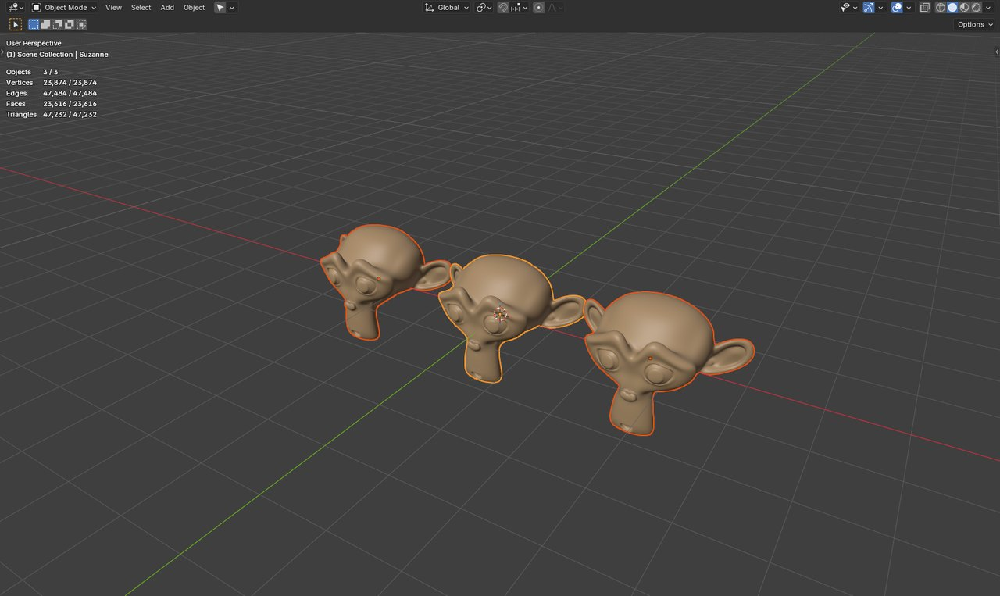

- Open the "Smart Workspace" tab in the 3D Viewport Sidebar (N key).
- Open the "Smart Viewport Optimizer Plus" section header, then open "Detailed Settings".
- In "Setting Load", choose "Balanced" in "Settings:".
- Click "Apply Preset".
What to look for: Before, the surfaces are displayed smooth and shaded; after, the display becomes flat color with no shading, and the relief of the 3D shapes is no longer drawn. The statistics display in the upper left (vertex and face counts) also disappears, and the move and rotate arrows (gizmo) appear on the selected object. The shape itself has not changed.
ExampleLighten with "Optimized" and Restore with "Standard"(demonstrated on Suzanne, an armature, and empties)
Applying the "Performance" preset changes the display to a light one that keeps only the shapes of objects. "Standard" returns it to the usual display.
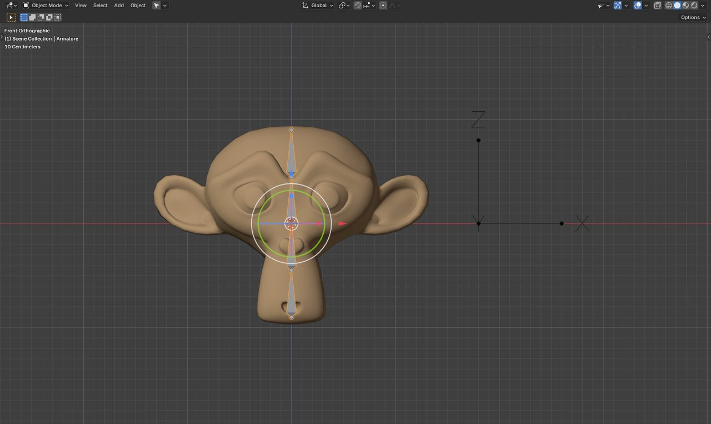
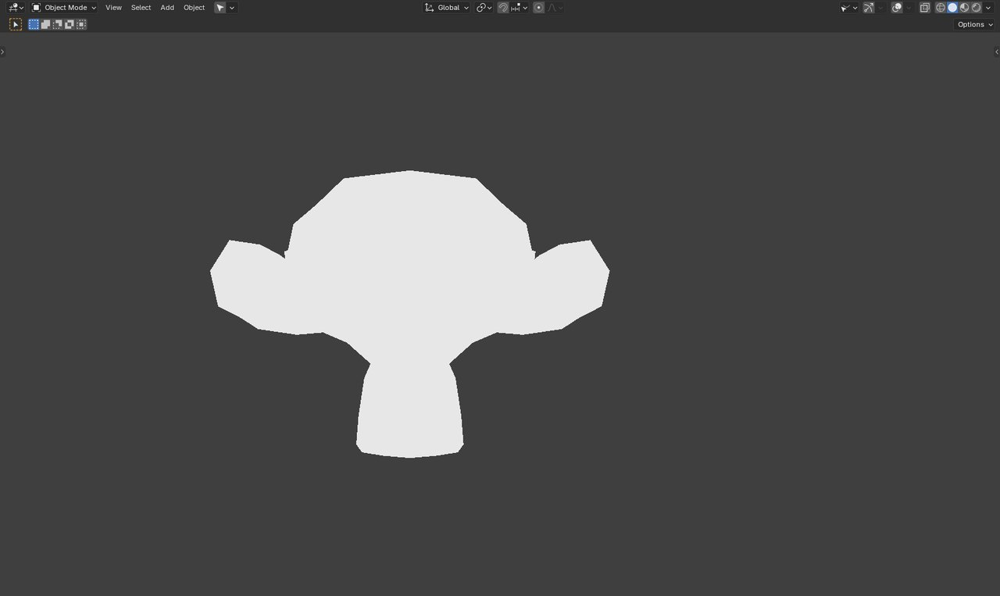
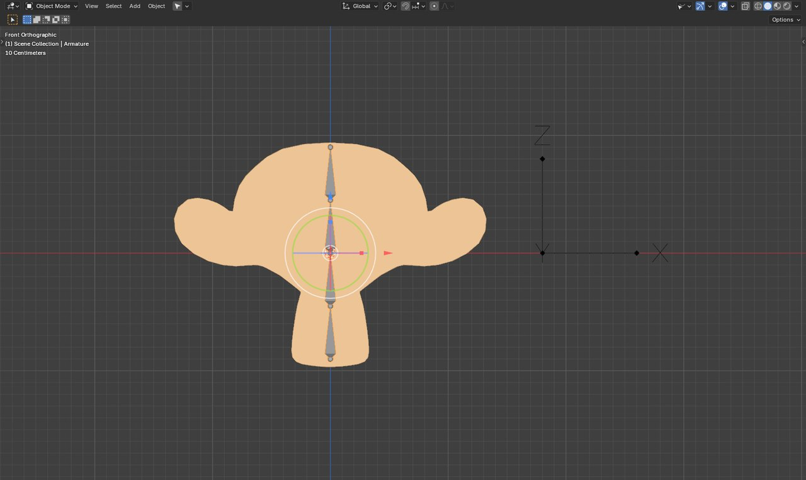
- Open the "Smart Workspace" tab in the 3D Viewport Sidebar (N key).
- Open the "Smart Viewport Optimizer Plus" section header, then open "Detailed Settings".
- In "Setting Load", choose "Performance" in "Settings:" and click "Apply Preset" ("Settings Mode" switches to "Optimized" automatically).
- To restore, click "Standard" in "Settings Mode".
What to look for: In "Optimized", Suzanne's subdivision is turned off and it becomes an angular white shape, and the bones, arrow empties, move arrows, and floor lines all disappear. Clicking "Standard" brings back the bones, empties, and subdivision. Shading and floor lines also return to the saved "Standard" settings. In this example, the display returns to shaded.
2. Key Features
This chapter walks through the features unique to this add-on, using numbered callouts on each figure. The numbers in a figure match the numbered list below it. Click a figure to enlarge it. Each individual setting is described under its own heading in Chapter 5.
2-1. Quick Launcher: Open Frequently Used Tabs with One ButtonTop Feature
Gather the frequently used tabs of the Sidebar (N panel) into your own categories and open a tab with a single popup button. You no longer need to look for it in the narrow column of tabs on the right edge. For a pinned tab, the panels stay lined up even while another tab is open.
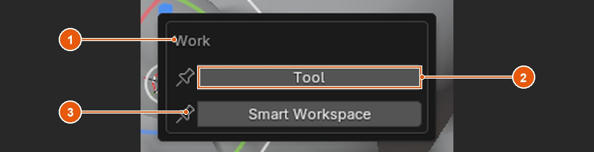
- 1"Work": The name of a category you created yourself. Tab buttons are lined up in a frame for each category.
- 2"Tool" Button: Clicking it opens the 3D Viewport Sidebar on this tab. If that tab is already showing, it closes.
- 3Pin Icon: Clicking it keeps the panels of that tab lined up even while other tabs are open (6–8).
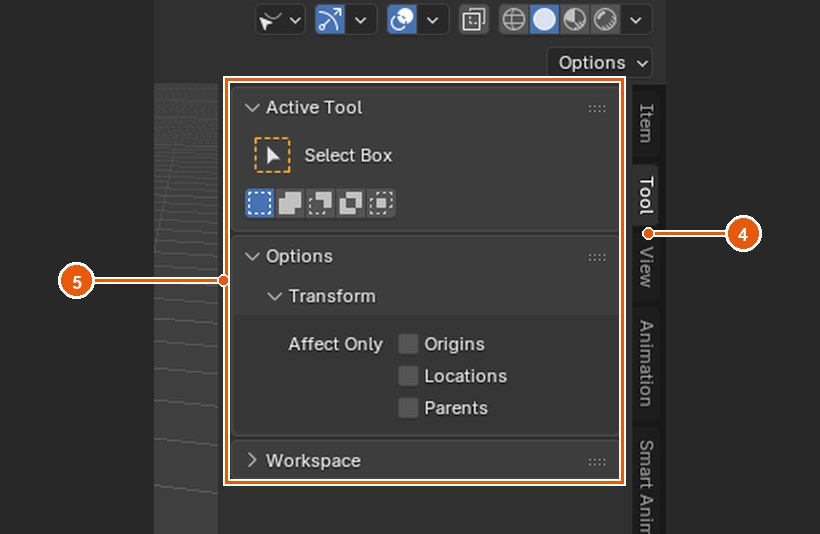
- 4"Tool" Tab: The tab you clicked in the launcher is open.
- 5Tab Contents: The panels of the "Tool" tab are visible right away.
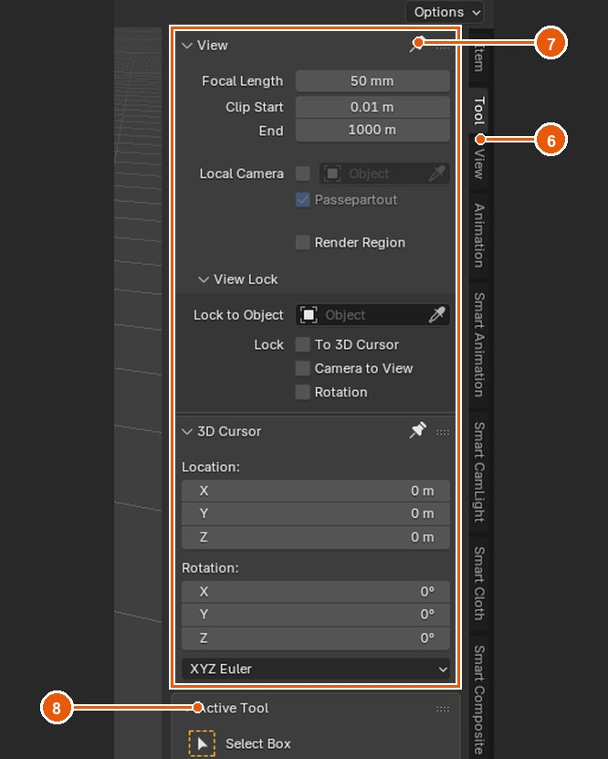
- 6"Tool" Tab: The tab currently open is the "Tool" tab.
- 7Pinned Panel: The panel of the "View" tab. A pin icon is attached to its header, and it is lined up together in the "Tool" tab as well.
- 8Active Tool: The panel that belongs to the "Tool" tab itself. It continues below the pinned panel.
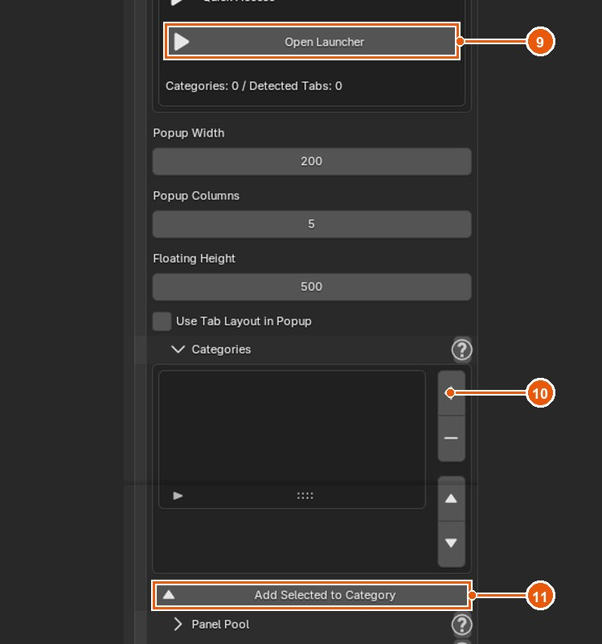
- 9Open Launcher: Opens the launcher popup.
- 10+: Creates a new category. To rename it, double-click its name in the list.
- 11Add Selected to Category: Puts the tab currently selected in Panel List into the selected category.
- In Panel List under N-panel Manager, click the refresh icon to load the tabs of the current Sidebar.
- Create a category with + in Categories and rename it (for example, "Work").
- Select a tab in Panel List and click Add Selected to Category. Repeat for as many tabs as you want to include.
- In Workspace & Launcher, click Open Launcher, then click the button of the tab you want to open.
- Ctrl+click on a button opens that tab in a separate 3D Viewport window. Alt+click opens a panel inside the tab directly.
- Click the pin icon again to remove the pin.
- The launcher configuration and pins can be kept per workspace.
Settings in detail: 5-6. Workspace & Launcher, 5-7. Categories, 5-8. Panel List
2-2. Change the Names and Order of Sidebar TabsOrganize
Give the tabs lined up on the right edge of the Sidebar any names you like and rearrange their order. Just decide the names and order in Panel List and click the apply button, and the actual tabs change. Reset returns them to the original.
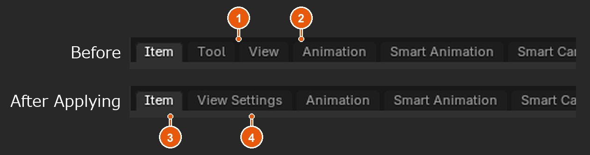
- 1"Tool" (Before): Before, it is right below Item. After applying, it moves down in the list order and goes outside this figure.
- 2"View" (Before): Name this tab "View Settings" and move it up with the up arrow.
- 3"Item" (After): A Blender built-in tab. Even after applying, its name and position do not change, and it stays at the very top.
- 4"View Settings" (After): The new name of "View". It moved right below Item.
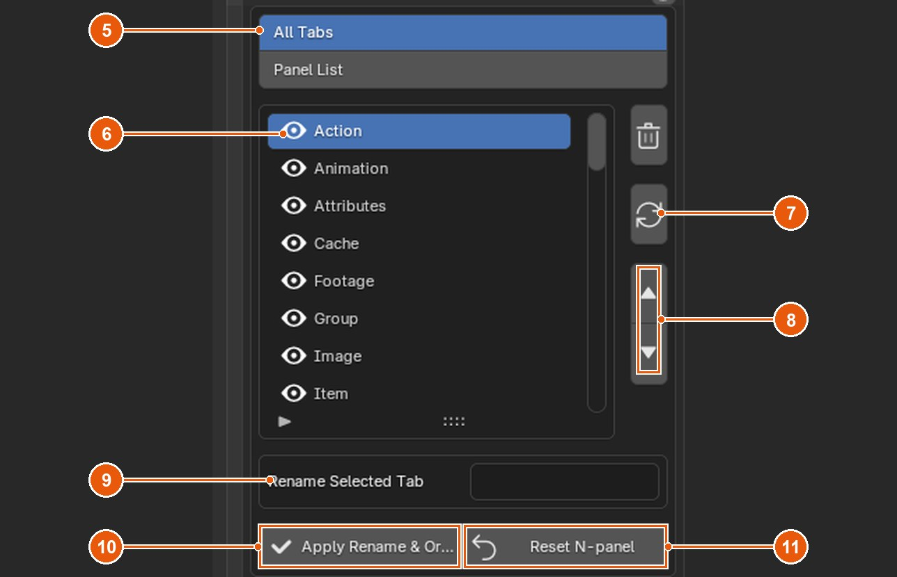
- 5All Tabs: Shows the list by Sidebar tab. The eye icon, rename, and apply buttons appear in this mode.
- 6Eye Icon: Whether that tab appears in the Quick Launcher. Even if you turn it off, the Sidebar tab itself does not disappear.
- 7Refresh Icon: Rechecks the current Sidebar and matches the list to the tabs that actually exist. Click it after enabling or disabling an add-on.
- 8Up and Down Arrows: Change the order of tabs in the list.
- 9Rename Selected Tab: The name to give the tab selected in the list. This name also appears on the launcher button.
- 10Apply Rename & Order: Clicking it makes the Sidebar tabs take the names and order in this list (in the figure, the name is shortened in the middle).
- 11Reset N-panel: Clicking it restores the names and order of the tabs and also removes the tab pins of this workspace.
- In N-panel Manager > Panel List, select All Tabs and click the refresh icon.
- Select a tab in the list and enter the new name in Rename Selected Tab.
- Change the order within the list with the up and down arrows.
- Click Apply Rename & Order.
- If Auto Restore on File Load is Enabled, the same names and order come back the next time you start Blender. When it is Disabled, they return to the original after a restart, so apply again.
- Even after a reset, the names given in the list remain for the launcher buttons.
- The order of the Quick Launcher buttons does not change in this list (they follow the order inside Categories).
Settings in detail: 5-8. Panel List
2-3. Smart Viewport Optimizer Plus: Lighten the Display with One Button and Return ItLightweight
Switch the 3D Viewport display with one button between two sets of settings: the light Optimized and your usual Standard. Choose a preset and the display becomes light at once; click Standard and it returns to your saved usual display.
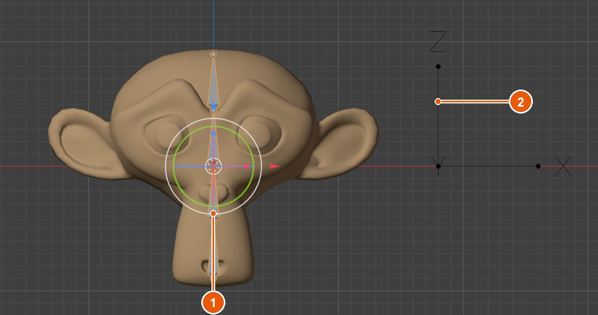
- 1Bones: The bones inside the body. They become invisible in Optimized.
- 2Arrow Empties: The arrow empties on the right. These also disappear in Optimized.
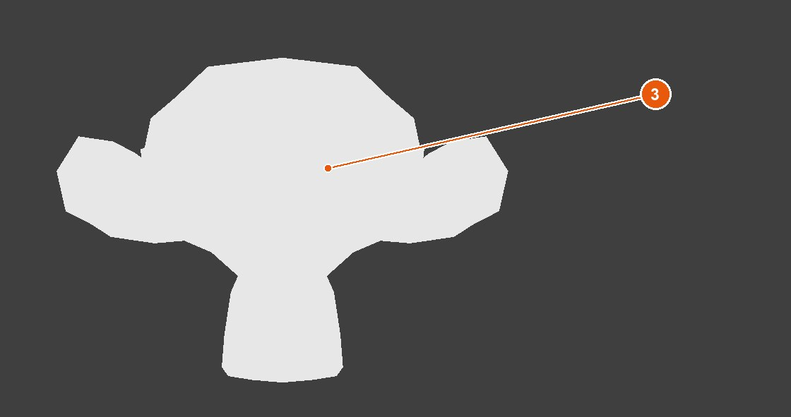
- 3White Shape: Subdivision is turned off and it becomes an angular white shape. Bones, empties, move arrows, and floor lines disappear, and objects cannot be selected.
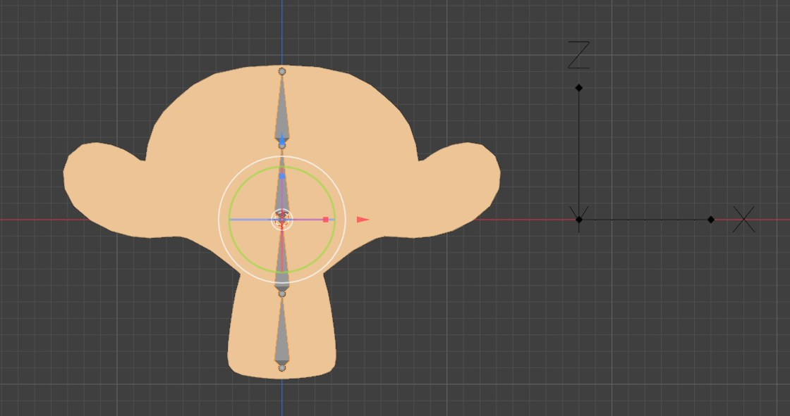
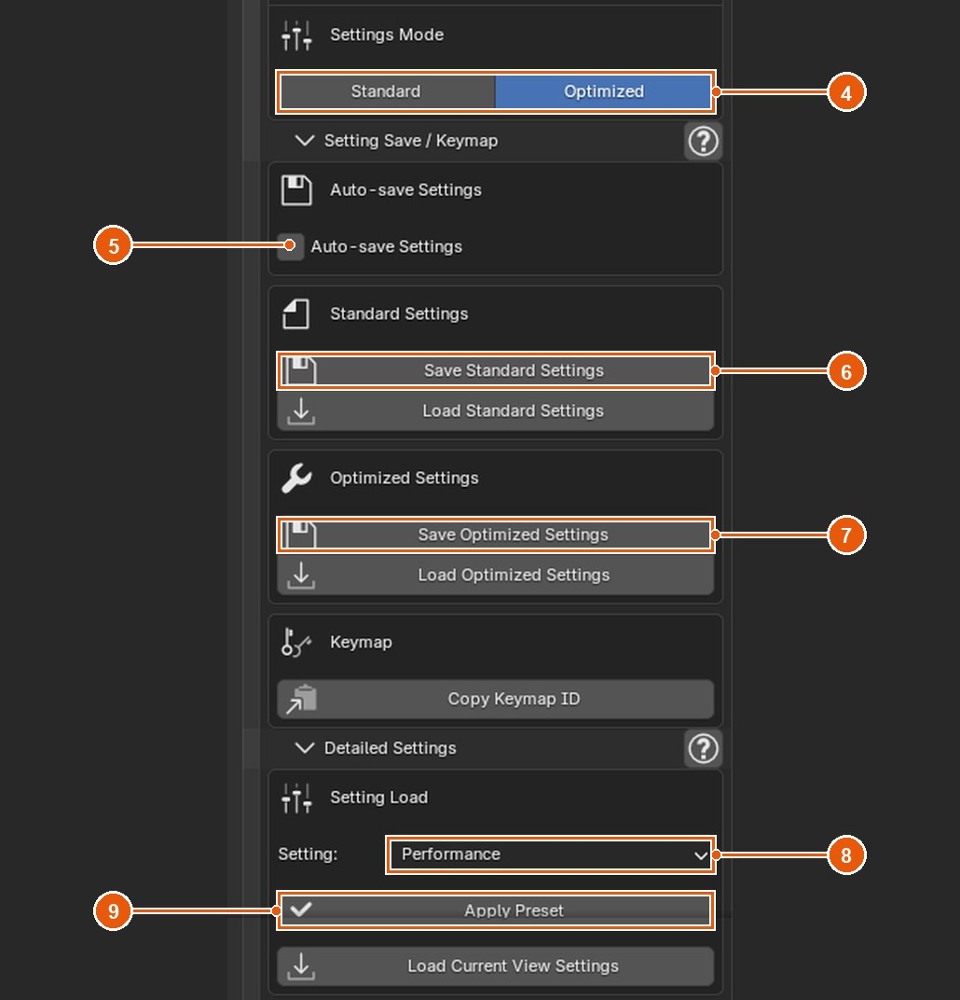
- 4"Standard" and "Optimized": Loads the settings of the one you click and applies them to the 3D Viewport immediately.
- 5Auto-save Settings: When turned on, changed settings are kept automatically. When off, keep them with the save buttons.
- 6Save Standard Settings: Saves the current settings for Standard. Clicking Standard returns to these settings.
- 7Save Optimized Settings: Saves the current settings for Optimized.
- 8Settings:: Choose from the presets Performance, Balanced, and Quality.
- 9Apply Preset: All items in Detailed Settings change to the selected preset and are applied to the 3D Viewport immediately.
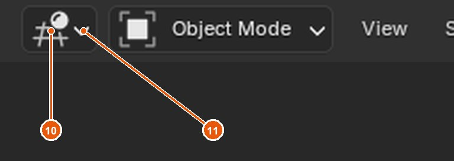
- 10Toggle Icon: Each click switches between Standard and Optimized.
- 11Downward Mark: Opens Header Settings, where you can change Detailed Settings on the spot.
- Open Detailed Settings in Smart Viewport Optimizer Plus and choose a preset in Settings:.
- Click Apply Preset (Settings Mode automatically becomes Optimized).
- To return to the original display, click Standard. You can also switch with the icon in the header.
- While Performance is active, empties and armatures are invisible, objects cannot be selected, and undo is turned off. All of these return with Standard, but it is not suited to work that manipulates armatures.
- Apply Preset alone does not save. To keep it, turn on Auto-save Settings or click a save button.
- When you click Standard, the per-object display, selectability, modifiers, constraints, and so on also return to their values from before optimization.
Settings in detail: 5-3. Smart Viewport Optimizer Plus
3. Getting Started
How to install the add-ons, how to change the interface language, and how the N panel and the "?" help buttons work in every add-on are covered in the "SmartTools Overall Specification". Please read chapters 2 to 5 there first.
| ZIP to install | SmartWorkspaceSuite_1.0.0.zip |
|---|---|
| Name shown in Blender | Smart Workspace |
| Supported Blender | 5.1.2 |
4. Where to Find It
All operations are gathered in the Smart Workspace tab of the 3D Viewport Sidebar (N panel). The same panel also appears in the Sidebars of the Image Editor, Node Editor, Video Sequencer, Movie Clip Editor, Dope Sheet, Graph Editor, NLA Editor, Text Editor, File Browser, and Spreadsheet. In addition, a Smart Viewport Optimizer Plus toggle button is added to the bar at the top of the 3D Viewport (the header), and reorder items are added to the right-click menu of the workspace tabs (the reorder items appear only when enabled).
| Editors | 3D Viewport, Image Editor (UV Editor), Node Editor, Video Sequencer, Movie Clip Editor, Dope Sheet, Graph Editor, NLA Editor, Text Editor, File Browser, Spreadsheet |
|---|---|
| Tab | Smart Workspace |
| Mode | Object Mode (works in any mode) |
- Install and enable the add-on (see the "Installation and Localization" chapter of the SmartTools Overall Specification).
- Open the 3D Viewport Sidebar (see the "How to Open the N Panel" chapter of the SmartTools Overall Specification for how to open it).
- From the tabs lined up vertically on the right edge of the Sidebar, click Smart Workspace.
- Inside the Smart Workspace panel, the section headers Always-on Toggles, Smart Viewport Optimizer Plus, Workspace Manager, N-panel Manager, and Other Tools are listed. Click the triangle to the left of a section header to open it.
- Click the "?" help button on the right of a section header to show the help for that section (see the "? Help" chapter of the SmartTools Overall Specification for how to use it).

5. Features
Each heading is explained in order from the top of the panel. Click the "?" to the right of a heading to show the same explanation in Blender. The blue "Example" boxes show real operations on simple models such as Suzanne, with the 3D Viewport before and after.
5-1. Smart Workspace (Whole Panel)
The parent panel that contains all operations of SmartWorkspace Suite. It is divided into 5 section headers. Every section header is closed at first.
Location3D Viewport Sidebar > Smart Workspace tab > Smart Workspace
| Item | What it does |
|---|---|
| Always-on Toggles | Where you turn the background features on or off one at a time. |
| Smart Viewport Optimizer Plus | Where you switch between the settings that lighten the display and your usual settings. |
| Workspace Manager | Where you save screen layouts and load them later. |
| N-panel Manager | Where you organize the N panel tabs and configure the Quick Launcher. |
| Other Tools | Where helper features such as 2D Pan View are gathered. |
| ? (Right of Each Section Header) | Shows a description of the section's feature, how to use it, and its settings in a popup. |
5-2. Always-on Toggles
Switches features that may keep running in the background, such as timers, drawing, and hotkeys (shortcut keys), all in one place. A feature that is off only shows a row in the panel and loads nothing to run. To keep startup and idle light, turn on only what you need. Toggles are saved immediately and come back after a restart or after opening another file.
LocationSmart Workspace tab > Always-on Toggles
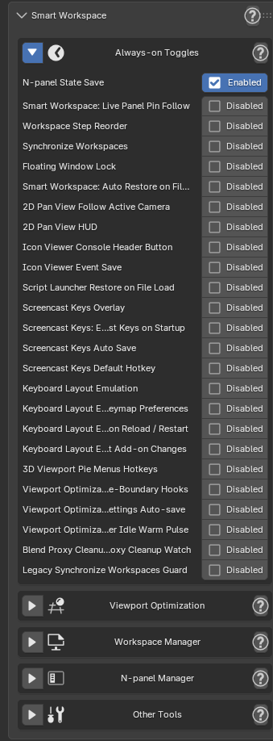
| Item | What it does |
|---|---|
| N-panel State Save | Saves immediately whenever you change a SmartWorkspace Suite setting, and restores it once after Blender starts. This is the only row that is Enabled from the start. Use the button on the right of each row to switch between Enabled and Disabled. |
| Smart Workspace: Live Panel Pin Follow | Keeps the panels of tabs pinned in the launcher visible even while other tabs are open. Clicking the pin icon in the launcher automatically makes this Enabled. When you make it Disabled, the existing pins are removed. Pins on panels that are not currently visible are removed the next time they are displayed. When you make it Enabled again, the pins return when you open that tab. |
| Workspace Reorder | Adds items to the right-click menu of the workspace tabs for reordering one step at a time (this is the same toggle as Workspace Step Reorder in Other Tools). |
| Synchronize Workspaces | Aligns the state of the 3D Viewport when you switch workspaces. |
| Floating Window Lock | Keeps the contents of detached separate windows unchanged even when you switch workspaces. |
| Smart Workspace: Auto Restore on File Load | After Blender starts or another .blend file is opened, automatically restores the profile, the launcher categories, and the saved state. It also restores, after startup, the Sidebar tab names and order that you changed with Apply Rename & Order. |
| 2D Pan View Follow Active Camera / 2D Pan View HUD | Toggles the feature that makes the 2D Pan View window follow the scene's active camera (the camera currently in use), and the small operation hints (HUD) shown at the lower left of the window. The hints appear only when this row is Enabled. |
| Screencast Keys Overlay | Displays the keys and mouse actions you press over the 3D Viewport. Turn it on only for recording or explaining. |
| Screencast Keys Default Hotkey | Registers the key that toggles Screencast Keys with a shortcut. Turn it off if it conflicts with other keys. |
| Keyboard Layout Emulation | Reassigns Blender shortcuts to match the selected keyboard layout. Turning it off restores the original shortcuts. |
| 3D View Pie Menu Hotkey | Registers the key that calls the bundled pie menu (a menu that appears in a circle around the mouse). |
| Smart Viewport Optimizer Plus File Boundary Handling / Auto-save Settings / Idle Warmup Pulse | Helpers for Smart Viewport Optimizer Plus. Turn on or off, one by one, the automatic processing when opening or saving a file, the automatic saving of settings, and the timer that runs while idle. |
5-3. Smart Viewport Optimizer Plus
A feature that lightens the 3D Viewport in heavy scenes. It holds two sets of settings, Standard and Optimized, and you switch between them with a button. The settings can be kept per workspace.
LocationSmart Workspace tab > Smart Viewport Optimizer Plus. A toggle button also appears at the left end of the 3D Viewport header (the bar where Object Mode, View, Select, and so on are lined up).
| Item | What it does |
|---|---|
| Current Workspace / Paste Source | Shows the current workspace name and the source workspace to copy settings from. Choose the source with the menu on the right of Paste Source. |
| Paste Settings to Current Workspace | Copies the Detailed Settings of the Paste Source workspace to the current workspace. |
| Settings Mode (Standard, Optimized) | Loads the settings of the one you click into Detailed Settings and applies them to the 3D Viewport immediately. Optimized gives a light display. When you click Standard, the per-object display, disabled state, selectability, modifiers, and constraints, the selection state, and preferences such as undo return to their values from before optimization. Shading and overlays return to the saved Standard settings. The Balanced settings are used only when no Standard settings have been saved. |
| Setting Save / Keymap | A collapsible section header. It contains Auto-save Settings, Save Standard Settings and Load Standard Settings, and Save Optimized Settings and Load Optimized Settings. Clicking Copy Keymap ID copies the name to use when registering the toggle as a shortcut. |
| Detailed Settings | A collapsible section header. In Setting Load inside it, choose Performance, Balanced, or Quality in Settings: and click Apply Preset. All items in Detailed Settings change and are applied to the 3D Viewport immediately. When you apply Performance, Settings Mode automatically becomes Optimized, and meshes are shown as flat solids without disappearing. Empties, armatures, and the like become invisible, objects can no longer be selected, the selection is cleared, and undo is turned off. Everything returns with Standard, but this is not suited to work that manipulates armatures. Load Current View Settings only loads the current Blender display settings into Detailed Settings and does not change the display. |
| Section Headers Inside Detailed Settings Overview | Under Detailed Settings Overview, the section headers Targets, Render Properties > Simplify, 3D Viewport > Viewport Shading, 3D Viewport > Overlays, 3D Viewport > Gizmos, 3D Viewport > Object Type Visibility, 3D Viewport > Object Type Selectability, Object Properties > Viewport Display, Modifier Viewport Display, Constraints, Particle Preview, Preferences > System, Render Preview / Engine, Preferences > Navigation, Preferences > Editing / Tool Settings, and Navigation Warmup are listed. Only the sections whose Use this section is turned on are used for switching. For example, if you set Viewport Shading under 3D Viewport > Viewport Shading to Wireframe, the display immediately becomes lines only. |
| Header Button (Toggle Smart Viewport Optimizer Plus) | The icon in the 3D Viewport header immediately switches between Standard and Optimized. The downward mark next to it opens Header Settings, where you can change Detailed Settings on the spot. You can check the descriptions with the "?" help button on the section headers or on the settings opened from the header. |
ExampleLighten the 3D Viewport Display with a Preset(demonstrated on Three subdivided Suzannes)
When you choose and apply a preset in "Detailed Settings" of "Smart Viewport Optimizer Plus", the 3D Viewport display immediately changes to a lighter form.
- Open the "Smart Workspace" tab in the 3D Viewport Sidebar (N key).
- Open the "Smart Viewport Optimizer Plus" section header, then open "Detailed Settings".
- In "Setting Load", choose "Balanced" in "Settings:".
- Click "Apply Preset".
What to look for: Before, the surfaces are displayed smooth and shaded; after, the display becomes flat color with no shading, and the relief of the 3D shapes is no longer drawn. The statistics display in the upper left (vertex and face counts) also disappears, and the move and rotate arrows (gizmo) appear on the selected object. The shape itself has not changed.
ExampleLighten with "Optimized" and Restore with "Standard"(demonstrated on Suzanne, an armature, and empties)
Applying the "Performance" preset changes the display to a light one that keeps only the shapes of objects. "Standard" returns it to the usual display.
- Open the "Smart Workspace" tab in the 3D Viewport Sidebar (N key).
- Open the "Smart Viewport Optimizer Plus" section header, then open "Detailed Settings".
- In "Setting Load", choose "Performance" in "Settings:" and click "Apply Preset" ("Settings Mode" switches to "Optimized" automatically).
- To restore, click "Standard" in "Settings Mode".
What to look for: In "Optimized", Suzanne's subdivision is turned off and it becomes an angular white shape, and the bones, arrow empties, move arrows, and floor lines all disappear. Clicking "Standard" brings back the bones, empties, and subdivision. Shading and floor lines also return to the saved "Standard" settings. In this example, the display returns to shaded.
ExampleSwitch to Wireframe by Changing One Detailed Setting(demonstrated on a subdivided Suzanne)
When you change an item in Detailed Settings, the change appears in the 3D Viewport on the spot. Here, change "Viewport Shading" to wireframe for a display that does not draw faces. You can check how to use each item with the "?" help button on the settings section header.
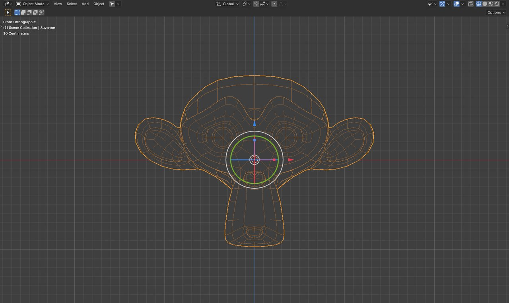
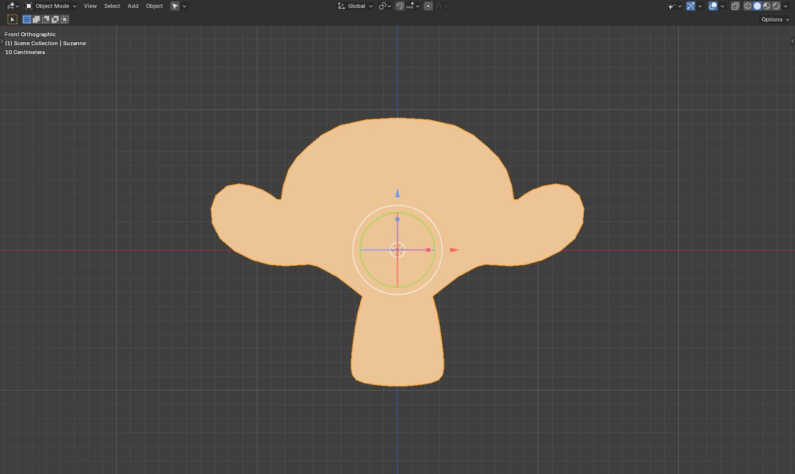
- Open the "Smart Workspace" tab in the 3D Viewport Sidebar (N key).
- Click "Standard" in "Settings Mode" of "Smart Viewport Optimizer Plus".
- Open "3D Viewport > Viewport Shading" in "Detailed Settings" > "Detailed Settings Overview".
- Choose "Wireframe" from the "Viewport Shading" menu.
- To restore, choose "Solid".
What to look for: The moment you change the menu, the face fill disappears and only lines are displayed. There is no need to click a button. Switching back to "Solid" returns the original display.
5-4. Workspace Manager
Saves the way the current workspace's screen is divided and its editor types as a save state (a record of the saved state), and loads it later into the current workspace. It does not create a new workspace tab.
LocationSmart Workspace tab > Workspace Manager
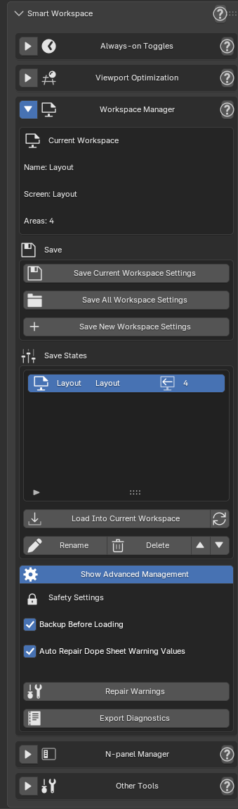
| Item | What it does |
|---|---|
| Current Workspace | Shows the name of the current workspace, the screen name (normally the same as the workspace name), and the number of areas (screen divisions). |
| Save Current Workspace Settings | Saves the state of the current workspace as a save state and adds a row to the list below. |
| Save All Workspace Settings | Saves every existing workspace, each as its own save state. |
| Save New Workspace Settings | Gives it a name and saves the state of the current workspace as a separate save state. |
| Save States (List) | The list of saved save states. Each row shows, from the left, the name, the original workspace name, and the number of areas. If you have not renamed it, the same name appears twice in a row. Use the refresh button on the right of Load into Current Workspace to reload the list. |
| Load into Current Workspace | Loads the save state selected in the list into the current workspace. In the confirmation window you can choose the information to load (workspace name, layout and docking information, settings information, and so on). The screen divisions and editor types are rebuilt to the form they had when saved. |
| Rename / Delete / Up and Down Arrows | Operations to rename the selected save state, delete the save state, and change the order in the list. |
| Show Advanced Management | When turned on, Safety Settings (Backup Before Loading and Auto Repair Dope Sheet Warning Values), Repair Warnings, and Export Diagnostics appear. |
ExampleSave a Screen Layout and Restore It by Loading(demonstrated on Suzanne)
If you save the current way the screen is divided as a "Save States", you can restore it by loading it even after you change the layout.
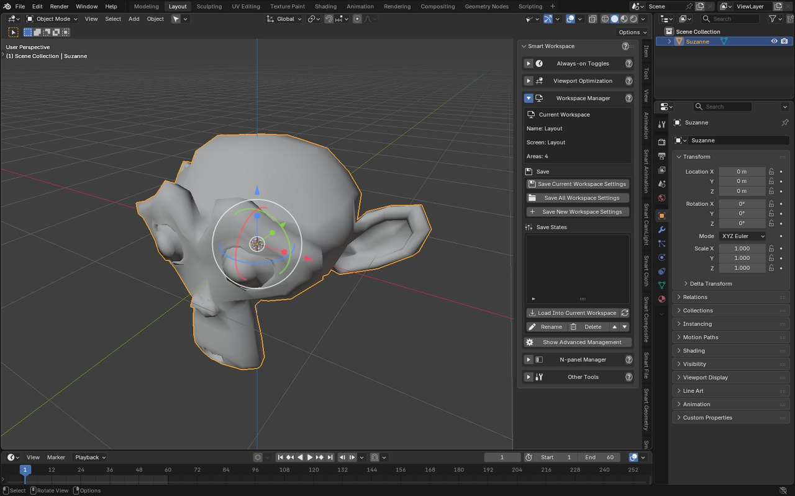
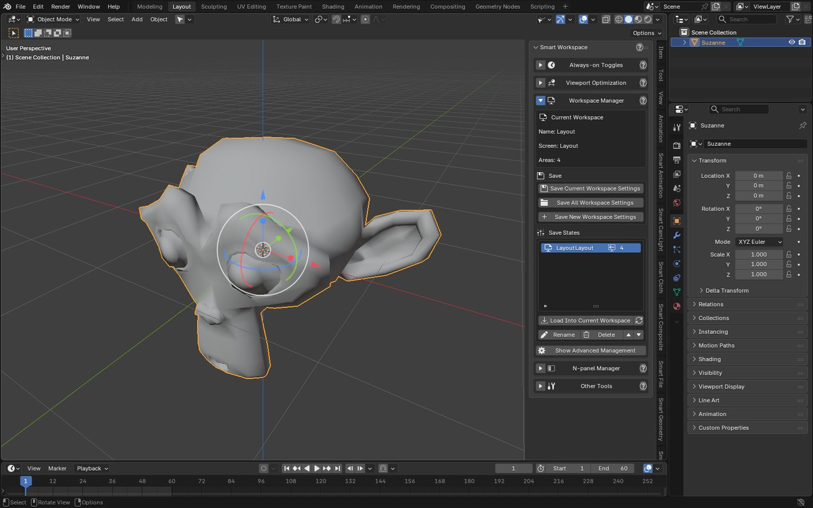
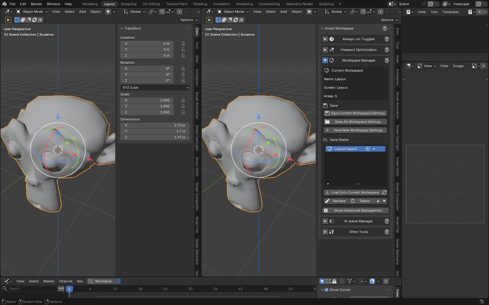
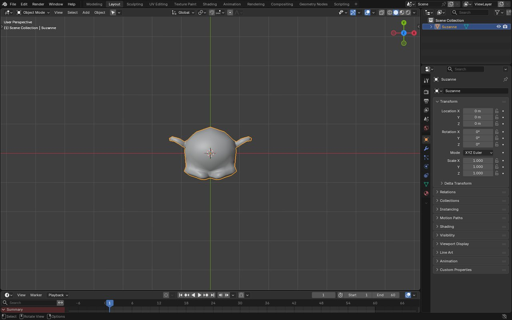
- Open the "Smart Workspace" tab in the 3D Viewport Sidebar (N key).
- Open the "Workspace Manager" section header and click "Save Current Workspace Settings".
- A row is added to the "Save States" list.
- Change the layout and work (in this example, the 3D Viewport was split into left and right, and the editors in the upper right and lower right were changed).
- Select the saved row in the list, click "Load Into Current Workspace", and click OK in the confirmation window.
What to look for: When you save, a row is added to the "Save States" list. The row shows the name and the original workspace name in succession as "Layout" "Layout", and the number on the right is the number of areas. When you load after changing the layout, the four divisions and the editor types (such as the Outliner and the Properties Editor) return to their original state. The direction of the 3D Viewport and the Sidebar that was open are not restored, so adjust them after loading.
5-5. N-panel Manager
A section header that gathers the organizing of N panel tabs and the Quick Launcher settings. It contains 5 collapsible section headers.
LocationSmart Workspace tab > N-panel Manager
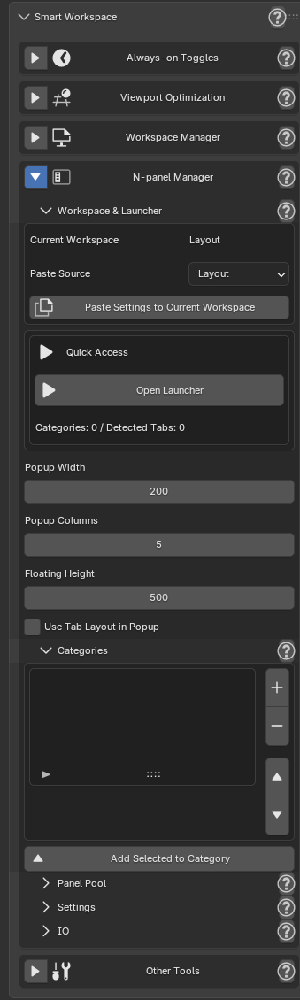
| Item | What it does |
|---|---|
| Workspace & Launcher | The button that opens the launcher, and settings such as the popup width and number of columns. |
| Categories | Edit the groups (categories) shown in the launcher and their contents. |
| Panel List | A list of the N panel tabs and individual panels that were found. You can decide the tab names and order and apply them to the Sidebar. |
| Settings | Saving to the .blend file, and the Copy buttons used when registering shortcuts (inside the section header it is shown as Smart Workspace Runtime Settings). |
| IO | Where you export settings to a JSON file and import them. |
5-6. Workspace & Launcher
Opens the Quick Launcher (a popup with the registered tabs lined up as buttons) and decides its appearance. The launcher configuration can be kept per workspace.
LocationN-panel Manager > Workspace & Launcher
| Item | What it does |
|---|---|
| Current Workspace / Paste Source | The current workspace and the source workspace to copy the configuration from. Choose the source with the menu on the right of Paste Source. |
| Paste Settings to Current Workspace | Copies the launcher configuration of the Paste Source to the current workspace. |
| Open Launcher | A button inside the Quick Access frame. It opens the launcher popup. Tab buttons are lined up in a frame for each category. Below the button, the number of categories you created and the number of tabs found are shown, as in "Categories: 0 / Detected Tabs: 0". |
| Launcher Tab Buttons | Clicking one opens the 3D Viewport Sidebar on that tab. If another tab is showing, it switches to that tab; if that tab is already showing, it closes the Sidebar. Ctrl+click opens the tab in a separate 3D Viewport window. Alt+click opens a panel inside the tab directly. Clicking the pin icon on the left opens that tab in the Sidebar and pins the panels inside it so they stay visible while other tabs are open (Live Panel Pin Follow also becomes Enabled). Closed panels are pinned when they are opened. Clicking again removes the pin. Pins are remembered per workspace. |
| Popup Width (1 Column) / Popup Columns | The width of one launcher column and the number of columns to line up. Widen it when tab names are long. |
| Floating Height | The window height of panels opened in a separate window from the launcher. Increase it if a panel is cut off at the bottom. |
| Tabbed Display in Launcher | When turned on, the display switches categories with tabs at the top. When off, the frames are lined up and everything is shown. |
ExampleOpen a Tab with a Launcher Button(demonstrated on Suzanne)
Group frequently used tabs into a category, and you can open the Sidebar on that tab with a single popup button.
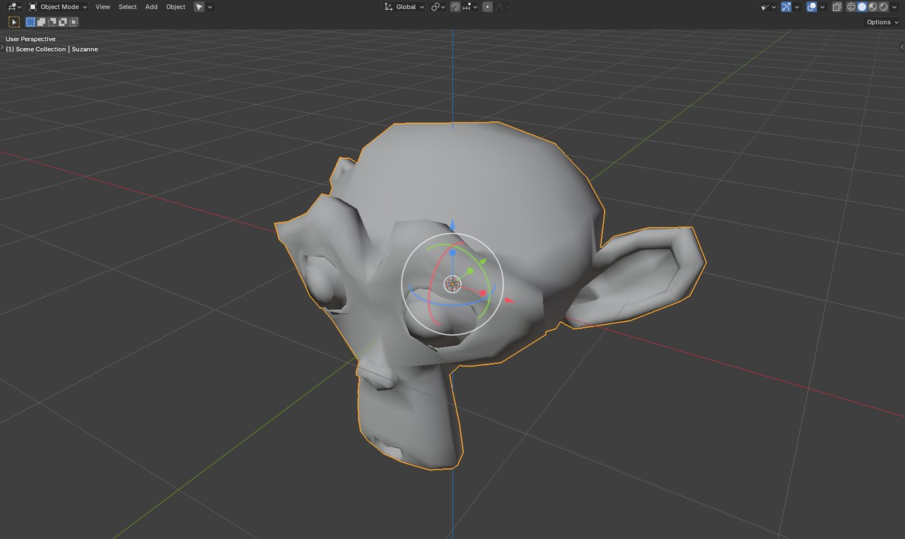
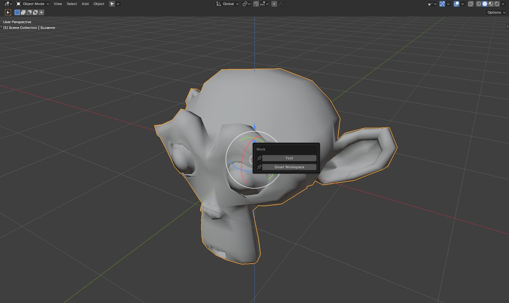
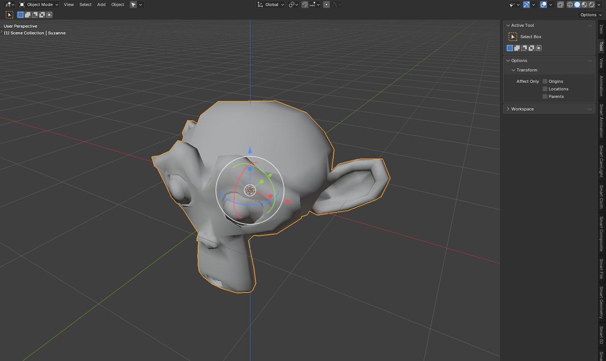
- Open the "Smart Workspace" tab in the 3D Viewport Sidebar (N key).
- In "Panel List" of "N-panel Manager", click the refresh icon.
- Create a category with + in "Categories" and rename it to "Work".
- Select "Tool" in "Panel List" and click "Add Selected to Category" in "Categories". Add "Smart Workspace" the same way.
- Click "Open Launcher" in "Workspace & Launcher".
- Click the "Tool" button in the popup.
What to look for: At first, the Sidebar is closed. The launcher shows the "Work" category and two buttons; clicking "Tool" opens the Sidebar on the right and shows the contents of the "Tool" tab.
ExamplePin the Panels of a Frequently Used Tab(demonstrated on Suzanne)
Click the pin icon in the launcher, and that tab's panels are displayed even while another tab is open.

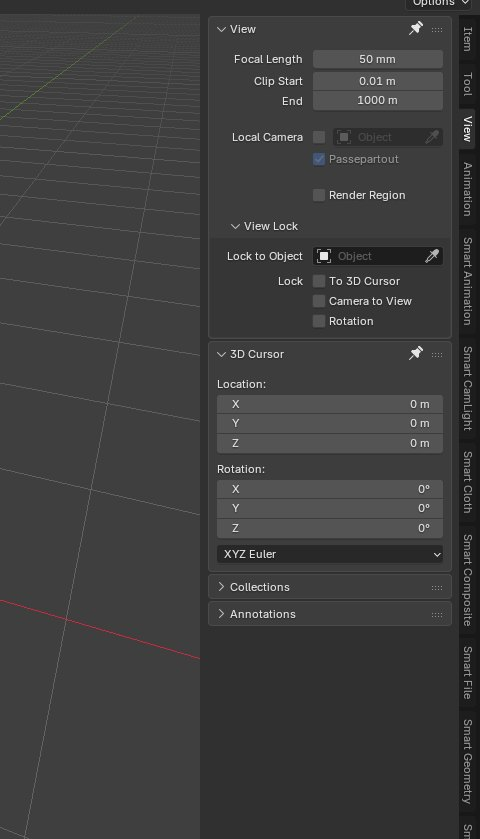
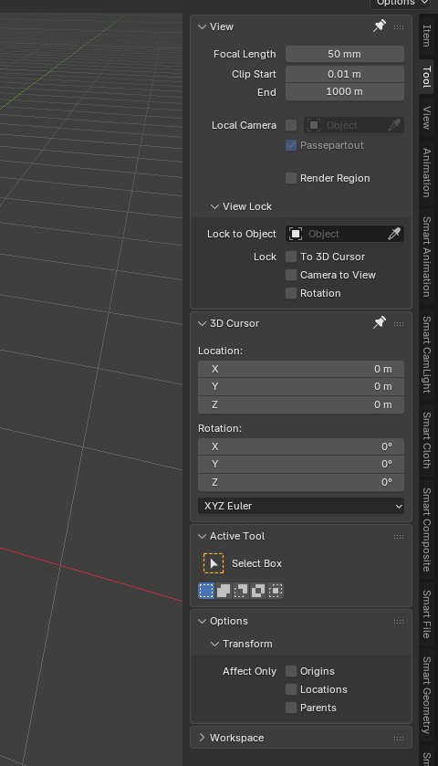
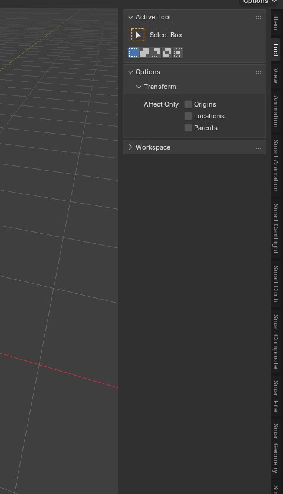
- Open the Quick Launcher and click the pin icon to the left of the "View" button.
- The Sidebar opens on the "View" tab.
- Click the "Tool" tab on the right edge of the Sidebar.
- To unpin, click the pin icon again.
What to look for: Even though the "Tool" tab is open, the panels of the "View" tab are lined up with it. They are the panels with a pin icon on their headers.
5-7. Categories
Create the categories shown in the launcher and put tabs in them. Removing a tab from a category does not delete the original add-on or panel.
LocationN-panel Manager > Categories
| Item | What it does |
|---|---|
| Category List and + / - | + creates a new category and - deletes the selected category. To rename one, double-click its name in the list. |
| Up and Down Arrows | Change the order of the categories. |
| 2. Category Contents | A frame that appears when you have created and selected at least one category. It has a list of the tabs inside and a field for the category name. Remove a tab with the - on the right, and change the order with the arrows. |
| Gear Button (Edit View3D Settings) | Located on the right of 2. Category Contents. It sets the window size and the position where the window appears (center of the mouse, the previous position, and so on) when an item selected in the list is opened in a separate window. |
| Add Selected to Category | Puts the tab currently selected in Panel List into this category. When the Sidebar is narrow, it is shown shortened as "Add Selected". |
5-8. Panel List
A list of the N panel tabs (or individual panels) that SmartWorkspace Suite found. Put what you select here into a category. You can change the tab names and order and reflect them in the launcher buttons and the actual Sidebar tabs.
LocationN-panel Manager > Panel List
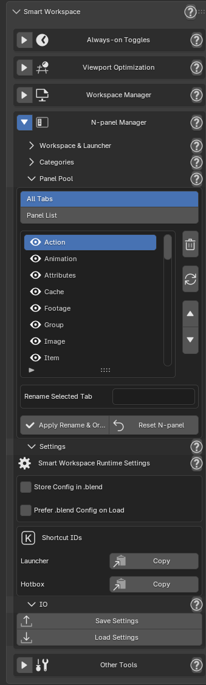
| Item | What it does |
|---|---|
| All Tabs / Panel List | Switches what the list shows between Sidebar tabs (All Tabs) and individual panels (Panel List). The eye icon, trash can, rename, and apply buttons below appear when All Tabs is selected. |
| Eye Icon | Toggles whether that tab appears in the Quick Launcher and the Hotbox (a menu that calls up N panel tabs). When turned off, the launcher button disappears even if the tab is in a category. The Blender Sidebar tab itself does not disappear. |
| Trash Can Icon (Clean Up Unused Tabs) | Clears from the list tabs that no longer exist and old records. |
| Refresh Icon | Rechecks the current Sidebar and matches the list to the tabs that actually exist. Click it after enabling or disabling an add-on. |
| Up and Down Arrows | Change the order of tabs within the All Tabs list. When you click Apply Rename & Order, the Sidebar tabs are also lined up in this order. The order of the Quick Launcher buttons does not change (it follows the order inside Categories). |
| Rename Selected Tab | A field that appears only when a tab is selected in the list. If you give the selected tab another name, the launcher button shows that name. When you click Apply Rename & Order, the Sidebar tab also takes this name. |
| Apply Rename & Order | Clicking it makes the Sidebar tabs take the names and order in this list. The Blender built-in Item tab keeps its name and position and stays at the very top. The Smart Workspace tab changes only in order. If Auto Restore on File Load is Enabled, the same names and order come back the next time Blender starts. When it is Disabled, they return to the original after a restart, so click it again (when the Sidebar is narrow, it is shortened in the middle as "Apply Rename & ... Order"). |
| Reset N-panel | Clicking it restores the names and order of the Sidebar tabs and also removes the tab pins of this workspace. The names given in the list remain for the launcher buttons (when the Sidebar is narrow, it is shortened in the middle as "Reset N-panel / ..."). |
ExampleHide a Launcher Button by Turning Off Its Eye Icon(demonstrated on Suzanne)
Turning off the eye icon in "Panel List" hides only the launcher button while the tab stays in the category.
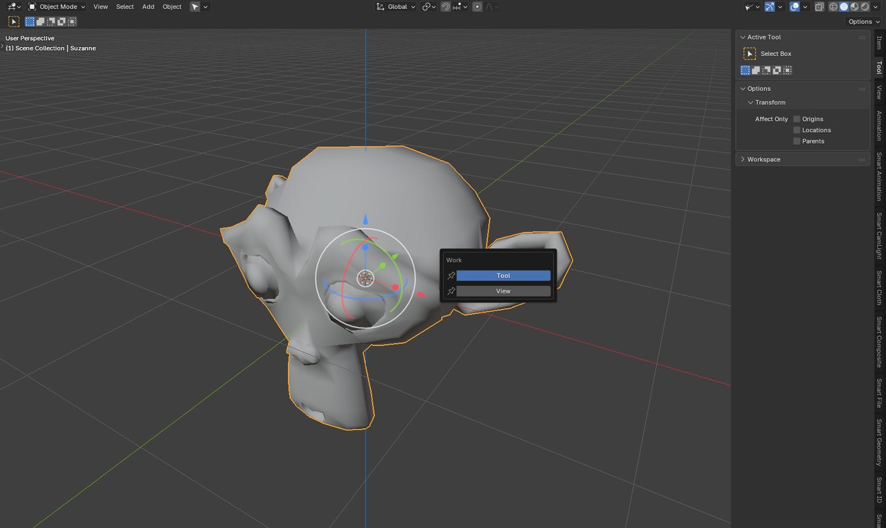
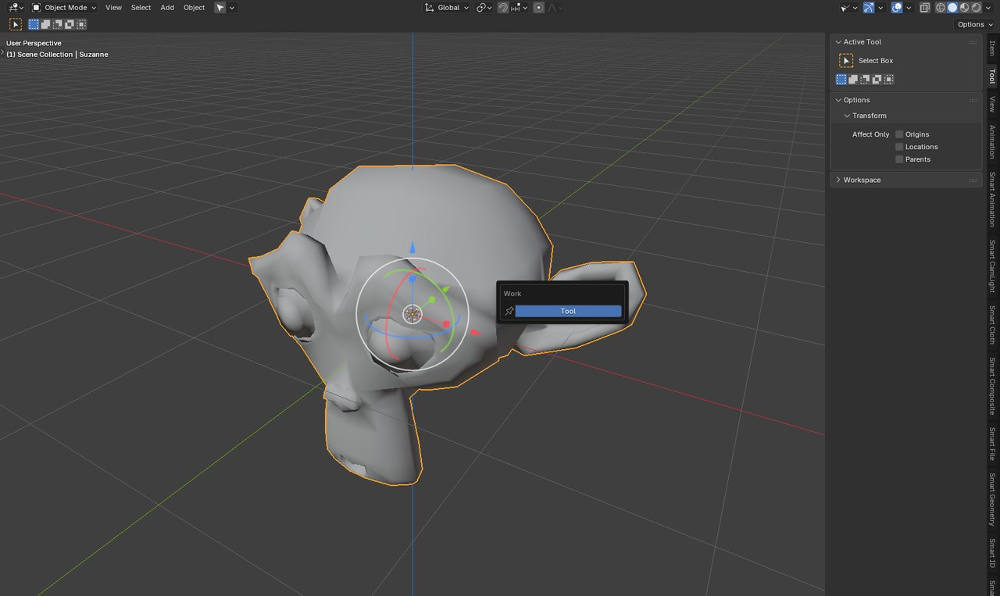
- Add "Tool" and "View" to the category, then open the Quick Launcher.
- In "Panel List", click the eye icon of "View" to turn it off.
- Open the Quick Launcher again.
What to look for: The "View" button disappears from the launcher. The "View" tab in the Sidebar remains.
ExampleChange the Names and Order of Sidebar Tabs(demonstrated on Suzanne)
Rename tabs and change their order in "Panel List", then click the apply button, and the actual Sidebar tabs change.

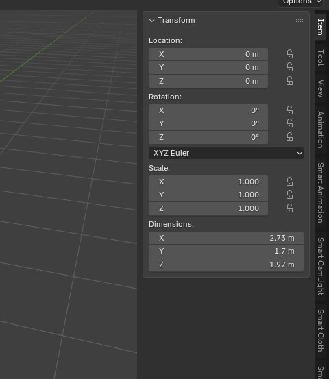
- Open the "Smart Workspace" tab in the 3D Viewport Sidebar (N key).
- Open "N-panel Manager" > "Panel List" and click the refresh icon in "All Tabs".
- Select "View" in the list and enter "View Settings" in "Rename Selected Tab".
- Use the up arrow to move the "View Settings" tab to the top of the list.
- Click "Apply Rename & Order".
- To undo, click "Reset N-panel".
What to look for: Compare the column of tabs on the right edge. "View" changes to "View Settings" and moves right below "Item". The other tabs are also arranged in the order of the list. The built-in "Item" tab stays at the top. Clicking reset returns the original names and order.
5-9. Settings
Settings that affect how SmartWorkspace Suite works as a whole. You can normally leave them at their defaults.
LocationN-panel Manager > Settings
| Item | What it does |
|---|---|
| Store Config in .blend | Also saves the SmartWorkspace Suite settings inside the current .blend file. Use it when you want a different configuration for each work. |
| Prefer .blend Config on Load | If the opened .blend file contains settings, they are loaded before the usual settings. |
| Shortcut IDs (Copy for Launcher and Hotbox) | Used when registering the Quick Launcher and the Hotbox (a menu that calls up N panel tabs) as shortcuts. Clicking Copy copies the name used for registration. |
5-10. IO
Exports the SmartWorkspace Suite settings to a JSON file (a text file that holds the settings) that you choose, or imports them. Use it for backups or moving to another PC.
LocationN-panel Manager > IO
| Item | What it does |
|---|---|
| Save Settings | Exports the current settings to a JSON file. |
| Import Settings | Loads settings from a JSON file and applies them immediately. When the Sidebar is narrow, it is shown shortened as "Load Settings". |
5-11. Other Tools
A section header that gathers 5 helper features. Open and use only what you need.
LocationSmart Workspace tab > Other Tools
| Item | What it does |
|---|---|
| 2D Pan View | Opens the camera image in a dedicated window for checking. |
| Viewport UI Toggle | A button that hides or shows the toolbar, Sidebar, and header of the 3D Viewport all at once. |
| Workspace Step Reorder | A feature that reorders workspace tabs one step at a time. |
| Synchronize Workspaces | Aligns the state of the 3D Viewport when you switch workspaces. |
| Floating Window Lock | Keeps the contents of detached separate windows. |
5-12. 2D Pan View
Opens the image of the selected camera in a dedicated window suited to 2D checking. You decide the window size, the display, composition guides (such as thirds), and the operation sensitivity, and you can save them as presets.
LocationOther Tools > 2D Pan View
| Item | What it does |
|---|---|
| Target Camera | Chooses the camera used in the window that opens. Until you choose a camera, Launch View is grayed out and cannot be clicked. |
| Launch View | Opens the window for the selected camera. |
| Window Settings | Sets Launch Mode (New Window or Split Area), Reuse Existing Window, Size Mode (Fraction of Parent, Pixels, or Render Resolution) and Window Fraction, Position Mode (such as Cursor Center), and Hide UI (Full Area). If you choose Split Area, the current 3D Viewport is split without opening a new window, and the camera image is shown on one side. |
| View Settings | A frame that is closed at first. Sets Lock Rotation, the overlay display, the display and opacity of wireframe and transparent display, the wire color, the object color, Background, and the display of Outline. |
| Camera Guides | A frame that is closed at first. Sets Safe Areas (the safe range of the screen), Passepartout (a display that darkens the outside of the camera frame) and Passepartout Alpha, and Composition Guide (such as Thirds, Center, Golden Ratio, and Diagonals). |
| 2D Navigation | Sets Navigation Mode (Pan Only or Pan + Zoom), Pan Sensitivity, Zoom Sensitivity, Invert Zoom, and Lock Zoom. |
| Presets | At first, click Initialize Presets once. After that, choose a slot (a place to save to) and move settings in and out with Save and Load. |
| Window Manager | A frame that is closed at first. A list of the open 2D Pan View windows. Refresh reloads the list, Update View sends the current settings to all windows, and Close All closes them all. The eye icon on each row brings that window to the front, and the x icon closes them one by one. When there are no windows, "No tracked windows." appears. |
ExampleShow the Camera View Alongside with a Composition Guide(demonstrated on Suzanne)
Choose a camera and a composition guide in "2D Pan View" and launch it, and the view from the camera appears in a dedicated area.
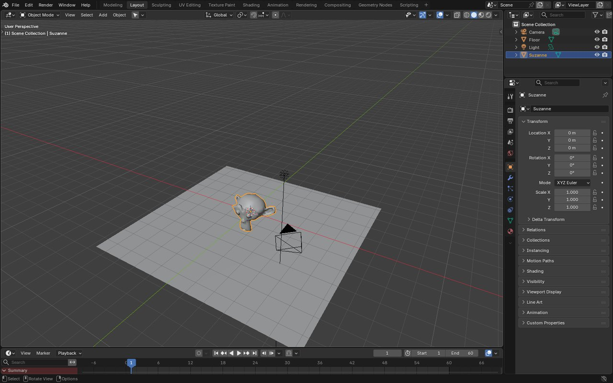
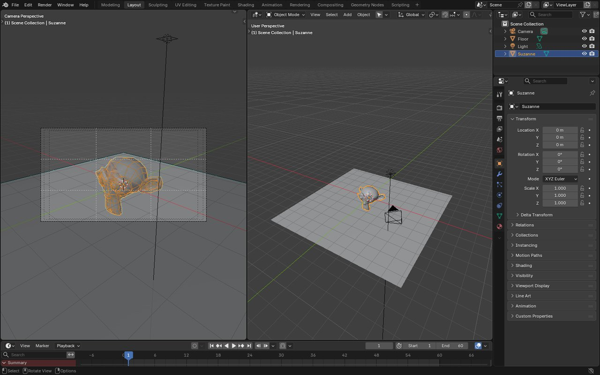
- Open the "Smart Workspace" tab in the 3D Viewport Sidebar (N key).
- Open "Other Tools" > "2D Pan View".
- Choose "Camera" in "Target Camera".
- In "Window Settings", choose "Split Area" in "Launch Mode".
- In "Camera Guides", choose "Thirds" in "Composition Guide".
- Click "Launch View".
- To show operation hints in the lower left of the window, set "2D Pan View HUD" in "Always-on Toggles" to "Enabled".
What to look for: The view from the camera appears in the left half, overlaid with the thirds lines and the safe area frames. The area outside the frame is darkened. The right half remains the original 3D Viewport. When "2D Pan View HUD" is set to "Enabled", operation hints appear in the lower left of the left area.
5-13. Viewport UI Toggle
Hides or shows the toolbar, Sidebar, and header all at once, for the current 3D Viewport only. Other workspaces and other 3D Viewports do not change.
LocationOther Tools > Viewport UI Toggle
| Item | What it does |
|---|---|
| Hide Toolbar, Sidebar, and Header | Hides all three at once. After hiding, the same button changes to Show Toolbar, Sidebar, and Header. |
ExampleHide the Toolbar, Sidebar, and Header at Once(demonstrated on Suzanne)
With a single button, you can hide the toolbar, Sidebar, and header of the current 3D Viewport at once and use more of the screen for your work.
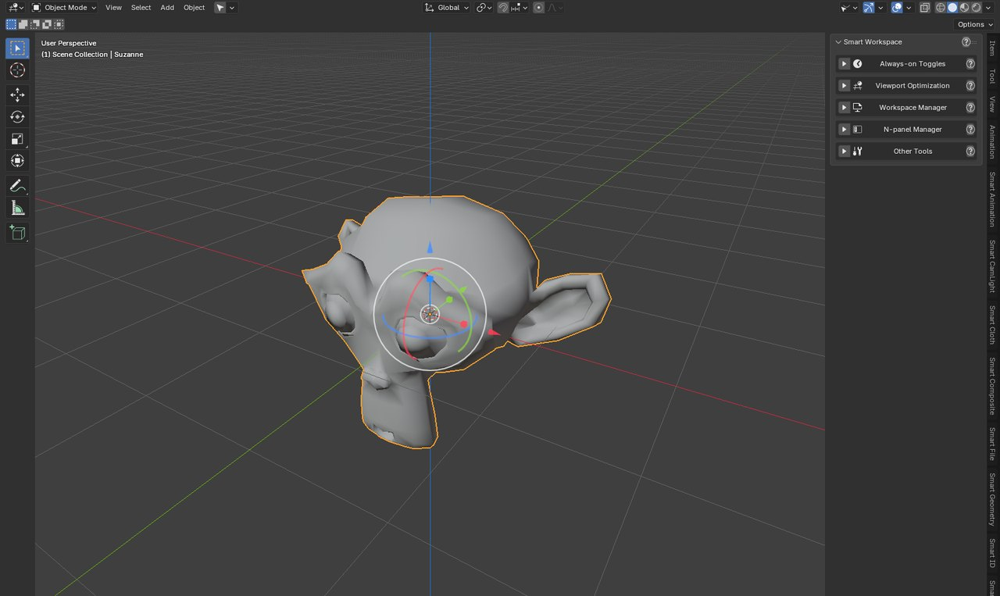
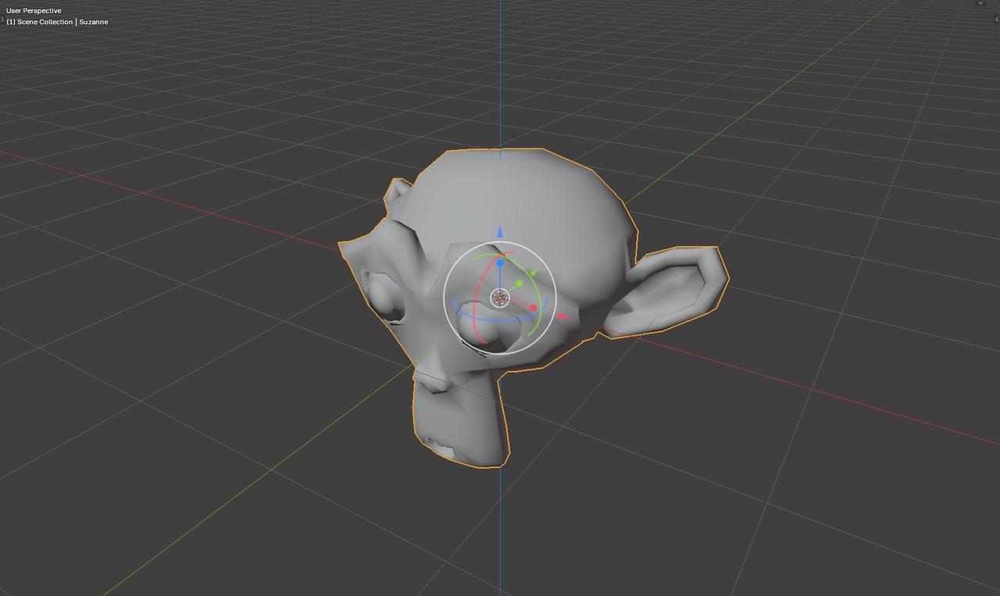
- Open the "Smart Workspace" tab in the 3D Viewport Sidebar (N key).
- Open the "Other Tools" section header, then open "Viewport UI Toggle".
- Click "Hide Toolbar, Sidebar, and Header".
- To show them again, press N to show only the Sidebar, then click "Show Toolbar, Sidebar, and Header", which now appears in the same place.
What to look for: Before, the toolbar on the left, the Sidebar on the right, and the header at the top are shown; after, all three disappear and the 3D Viewport fills the screen.
5-14. Workspace Step Reorder
Adds items to the menu that appears when you right-click a workspace tab, for moving it forward or backward one step at a time. It does not touch the scene or objects.
LocationOther Tools > Workspace Step Reorder. To move a workspace, right-click a workspace tab at the very top of the screen.
| Item | What it does |
|---|---|
| Enabled / Disabled | Toggles whether items are added to the right-click menu. Current State is shown below. |
| Move Forward (Right-click Menu) | Moves the right-clicked workspace forward (left) by one step. |
| Move Backward (Right-click Menu) | Moves the right-clicked workspace backward (right) by one step. |
ExampleMove a Workspace Tab One Step Back(demonstrated on Suzanne)
With "Move Backward" in the right-click menu, you can move a tab just one step to the right.
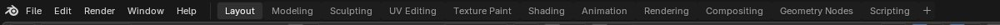
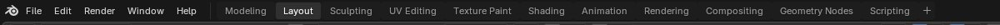
- Open the "Smart Workspace" tab in the 3D Viewport Sidebar (N key).
- Click "Enabled" in "Other Tools" > "Workspace Step Reorder".
- Right-click the "Layout" tab at the very top of the screen and click "Move Backward".
What to look for: Look at the row of tabs at the very top of the screen. "Layout" has moved one step, to the right of "Modeling". The contents of the scene do not change.
5-15. Synchronize Workspaces
When you switch workspaces, aligns the view direction, distance, and display of the destination 3D Viewport with those before the switch.
LocationOther Tools > Synchronize Workspaces
| Item | What it does |
|---|---|
| Enabled / Disabled | Toggles whether to synchronize. Current State is shown below. |
| Synchronization Options | Synchronize Shading Type, Synchronize Shading Settings, and Synchronize Overlays add more things to align. |
| Workspace Inclusion | Choose the workspaces to include in synchronization with the checkbox for each workspace name. All existing workspaces are listed. |
ExampleKeep the Same View Direction Across Workspaces(demonstrated on Suzanne)
When "Synchronize Workspaces" is enabled, the view direction and distance of the 3D Viewport carry over when you switch workspaces.

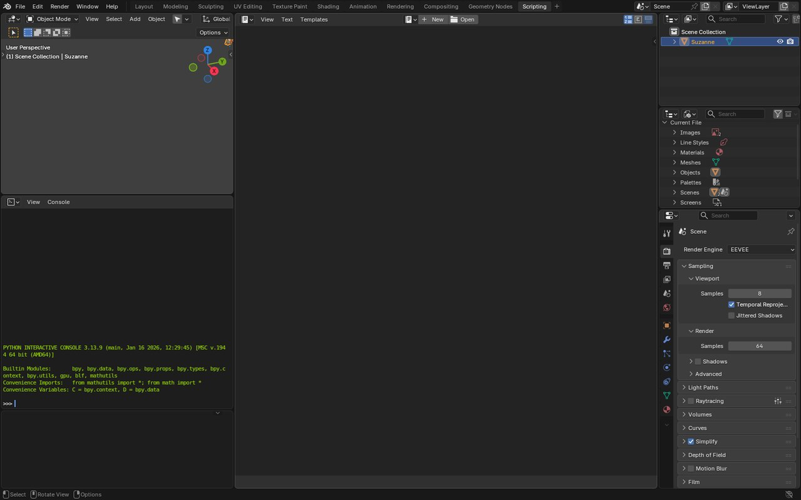
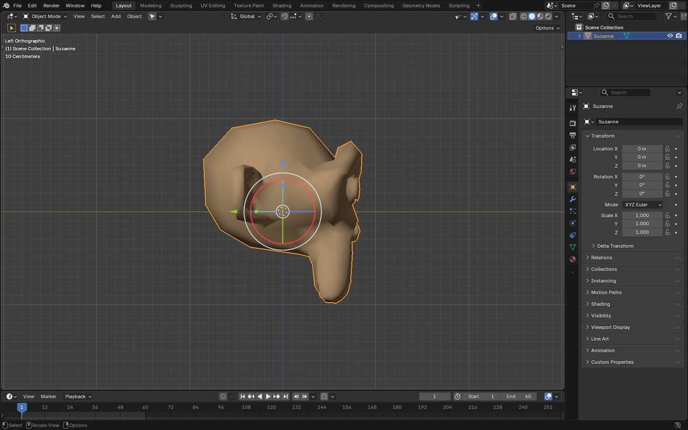
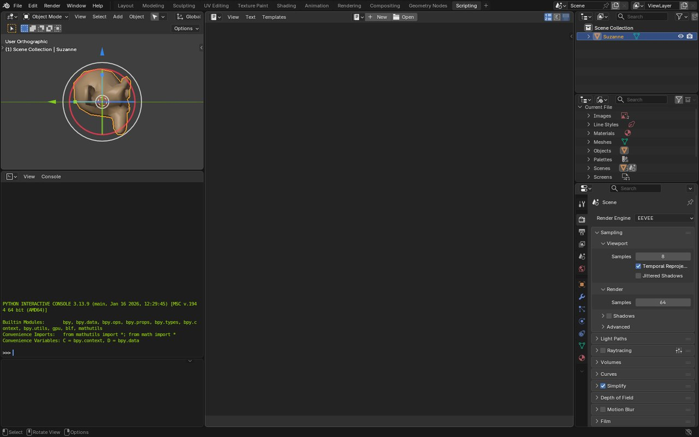
- Open the "Smart Workspace" tab in the 3D Viewport Sidebar (N key).
- Click "Enabled" in "Other Tools" > "Synchronize Workspaces".
- Using the tabs at the very top of the screen, switch from "Layout" to "Scripting".
What to look for: If it is left "Disabled", the 3D Viewport in the upper left of "Scripting" has a different direction and distance, and Suzanne is not visible. If you set it to "Enabled" and switch, the same side view of Suzanne appears (it appears smaller because the area is small).
5-16. Floating Window Lock
When you switch workspace tabs, keeps the editor contents of detached separate windows (floating windows) from changing. While Disabled, nothing happens.
LocationOther Tools > Floating Window Lock
| Item | What it does |
|---|---|
| Enabled / Disabled | Toggles whether to lock. Current State is shown below. |
Other Screens
6. Common Tasks
Gather Frequently Used Tabs into the Quick Launcher
When there are too many N panel tabs, make it possible to open only the ones you use often from a popup.
- Open N-panel Manager in the Smart Workspace tab.
- Open Panel List, select All Tabs, and click the refresh icon.
- Open Categories and click + to create a category. Double-click its name in the list and change it to an easy-to-understand name.
- In Panel List, select the tab you want to include, then click Add Selected to Category in Categories. Repeat for as many tabs as you want to include.
- In Workspace & Launcher, click Open Launcher.
Result: A popup appears with tab buttons lined up for each category. Clicking a button opens the Sidebar on that tab.
Open the Launcher with a Shortcut Key
Make it possible to bring up the Quick Launcher with a single key.
- In N-panel Manager > Settings, click Copy on the right of Launcher under Shortcut IDs.
- Open Edit > Preferences > Keymap.
- Open the 3D View category in the list and click Add New at the very bottom of it to add an item.
- Open the item you added and paste the copied name into the operator ID field.
- Assign any key you like and save with Save Preferences.
Result: When you press the assigned key in the 3D Viewport, the Quick Launcher opens.
Lighten the Display in a Heavy Scene
Lighten the 3D Viewport display when rotating or zooming is sluggish.
- Open Smart Viewport Optimizer Plus in the Smart Workspace tab.
- Open Detailed Settings, choose Performance in Settings: under Setting Load, and click Apply Preset. Settings Mode automatically becomes Optimized.
- To return to the usual display, click Standard. You can also switch with the icon at the left end of the 3D Viewport header.
Result: After applying, you get a flat, light display with the helper displays gone. When you click Standard, the per-object display, selection, undo, and so on return to their state before applying, and shading and overlays take the values of the Standard settings.
Save a Screen Layout and Restore It Later
Record a screen layout that you have divided in a way that is easy to work with.
- Set up the screen in the layout you want to restore, then open Workspace Manager.
- Click Save Current Workspace Settings.
- When you want to restore it later, select the saved one in the Save States list.
- Click Load into Current Workspace, choose the information to load in the confirmation window, and run it.
Result: The divisions and editor types of the current workspace return to the form they had when saved.
Check the Camera Image in a Separate Window
Show the image seen from the camera in a separate window, with composition guides.
- Place a camera in the scene.
- Open Other Tools > 2D Pan View.
- Choose the camera in Target Camera.
- If needed, choose Thirds or another guide in Composition Guide under Camera Guides.
- Click Launch View.
Result: The image of the selected camera opens in a dedicated window. Inside the window, you can use Fit and Start 2D Nav from the pie menu.
Change the Names and Order of Sidebar Tabs
When there are many tabs, gather the frequently used tabs at the top and give them easy-to-understand names.
- Open N-panel Manager > Panel List in the Smart Workspace tab, select All Tabs, and click the refresh icon.
- Select the tab you want to rename in the list and enter a name in the Rename Selected Tab field.
- Change the order of the list with the up and down arrows.
- Click Apply Rename & Order.
- If you want the same result at the next startup, set Smart Workspace: Auto Restore on File Load in Always-on Toggles to Enabled.
Result: The Sidebar tabs take the new names and order. To undo it, click Reset N-panel.
7. Troubleshooting
- The tab of an add-on I installed does not appear in Panel List.
- Click the refresh icon in Panel List. It rechecks the current Sidebar and matches the list to the tabs that actually exist. Click it every time after you enable or disable an add-on.
- I changed the tab names and order, but the N panel did not change.
- Changing the names and order alone does not change the Sidebar. Click Apply Rename & Order in Panel List. Only the Blender built-in Item tab does not change.
- I want to return the order of the N panel tabs to the initial state.
- Click Reset N-panel in Panel List. The names and order of the tabs return to the original.
- If I remove a tab from a category, is the original add-on deleted too?
- No. It is removed only from the launcher settings, and the original add-on and panels remain as they are.
- Where are the settings saved? Do they disappear when I restart Blender?
- They are saved automatically in Smart_Workspace_Suite in the Blender CONFIG folder and come back after a restart. If you want to vary them for each work, turn on Store Config in .blend in Settings.
- The Sidebar disappeared, and I can no longer click the SmartWorkspace Suite buttons.
- You have hidden everything with Viewport UI Toggle. Show the Sidebar over the 3D Viewport with the standard Blender operation (see the "How to Open the N Panel" chapter of the SmartTools Overall Specification), then click Show Toolbar, Sidebar, and Header in Other Tools > Viewport UI Toggle. The toolbar, Sidebar, and header all come back together.
- After using Smart Viewport Optimizer Plus, the display does not return to normal.
- Click Standard in Settings Mode under Smart Viewport Optimizer Plus. You can also switch with the icon at the left end of the 3D Viewport header. The appearance of Standard returns to the saved settings, so it is not always a flat display. You can change it as you like with Lighting and similar items under 3D Viewport > Viewport Shading.
- Should I turn on all the items in Always-on Toggles?
- No. Items that are on keep running in the background. Turn on only the features you use.
- When I open Workspace Manager, "Workspace Manager is not initialized." appears and there are no save buttons.
- Click Repair Workspace Manager. It redoes the registration and restores the saved states and the list.
- Modifier or object display stays off and does not return even when I click Standard.
- Standard restores only what was recorded when optimization was applied. For anything that was not recorded, restore the modifier or Outliner viewport display by hand.
- After choosing Performance, armatures and empties became invisible and I cannot select objects.
- That is how Performance works. Click Standard to bring them back. Do not use Performance when you are working with armatures.
For problems common to every add-on, such as an add-on not appearing or the interface language not changing, see "Troubleshooting" in the SmartTools Overall Specification.
8. Glossary
- N Panel (Sidebar)
- The tall area that appears on the right side of the 3D Viewport and other editors. You switch its contents with the tabs lined up vertically on the right edge.
- Tab
- The headings lined up vertically on the right edge of the Sidebar. Tabs increase with each add-on.
- Workspace
- A combination of screens for each kind of work, such as Layout and Modeling, lined up at the very top of the screen.
- Quick Launcher
- A popup with the registered tabs lined up as buttons. Clicking a button opens that tab.
- Category
- A group inside the Quick Launcher. You create it yourself and put any tabs you like in it.
- Pin
- Keeping a panel visible even while other tabs are open. Use the pin icon to the left of a launcher button to pin all the panels inside a tab at once.
- Save State
- A record of a screen layout saved in Workspace Manager.
- Overlay
- Helper displays shown on top of the 3D Viewport (such as the floor grid and the origin dot).
- Gizmo
- The move and rotate arrows shown in the 3D Viewport, and the navigation marks at the upper right.
- Pie Menu
- A menu that appears with its items arranged in a circle around the mouse.
- Hotkey
- A shortcut key that calls a feature.
- CONFIG Folder
- The folder where Blender saves its settings. On Windows, it is inside Blender Foundation in AppData.
9. Appendix: Version, Checksum and Limitations
| Add-on | SmartWorkspace Suite (smart_workspace_suite) |
|---|---|
| Version | 1.0.0 |
| ZIP | SmartWorkspaceSuite_1.0.0.zip |
| Size | 854,431 bytes |
| SHA256 | 9d211a663fe4da3b36b390120fba45a023a5cccf662cbf5e52be8be9cbef2275 |
Limitations and Notes
- Workspace Manager does not create new workspace tabs. What returns on loading is the screen divisions and editor types; the direction of the 3D Viewport and whether the Sidebar is open or closed do not return.
- Hiding with Viewport UI Toggle also hides the Sidebar. To bring them back, show the Sidebar with the standard Blender operation, then click Show Toolbar, Sidebar, and Header.
- Bringing a window to the front with Window Manager in 2D Pan View is not supported by Blender 5.1 in some environments. In that case, use your OS window switching.
- Features that are off in Always-on Toggles load nothing to run. When you want to use such a feature, turn it on first.
- Apply Preset is not saved to the file when Auto-save Settings is off. To keep it, click a save button.
- Even when you click Standard, shading and overlays do not return to their appearance before optimization; they take the values of the Standard settings.
- The Quick Launcher tab buttons open the 3D Viewport Sidebar.
- The Blender built-in Item tab cannot have its name or order changed. The Transform panel in the Item tab cannot be pinned either.
- The tab of an add-on enabled after Apply Rename & Order keeps its original name until you click it again.
- The pin on a panel inside a tab is applied when the panel is drawn in the open state. For closed panels, it is applied when they are opened. After a restart, it is applied once you open the pinned tab.
- The same goes for removing pins: the pin on a panel that is not currently visible is removed the next time it is displayed. The same applies when you disable SmartWorkspace Suite.
- The pinned state is also saved in the .blend file. If you open a file saved before disabling Live Panel Pin Follow, the pins remain. Right-click the panel header to remove them.
- Of the bundled pie menus, the Smart Workspace Cleanup Scope pie, which appears when you press the X key in the Outliner, only shows an explanatory text and deletes nothing (it does not delete unused data in the whole file). To delete unused data, use the standard Blender features.
SmartWorkspace Suite Manual v1.0.0 / Built 2026-11-19